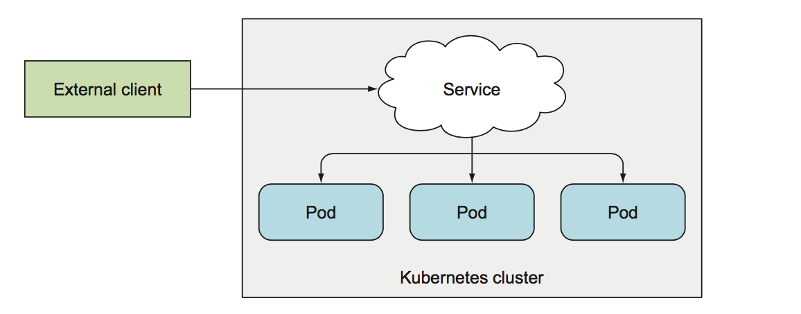
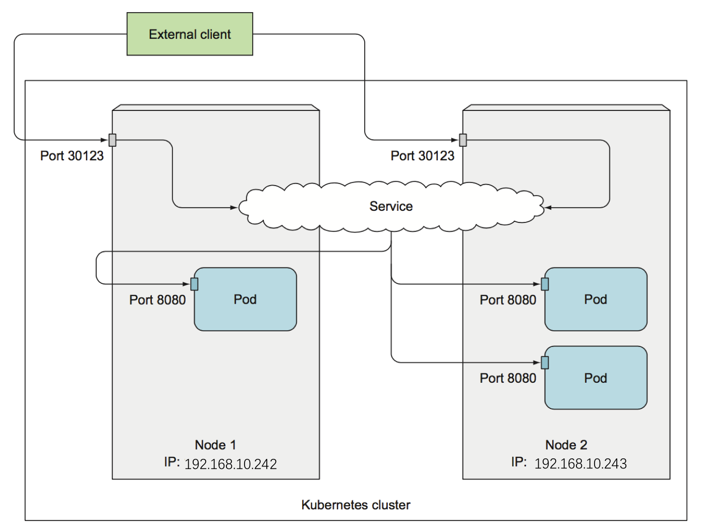
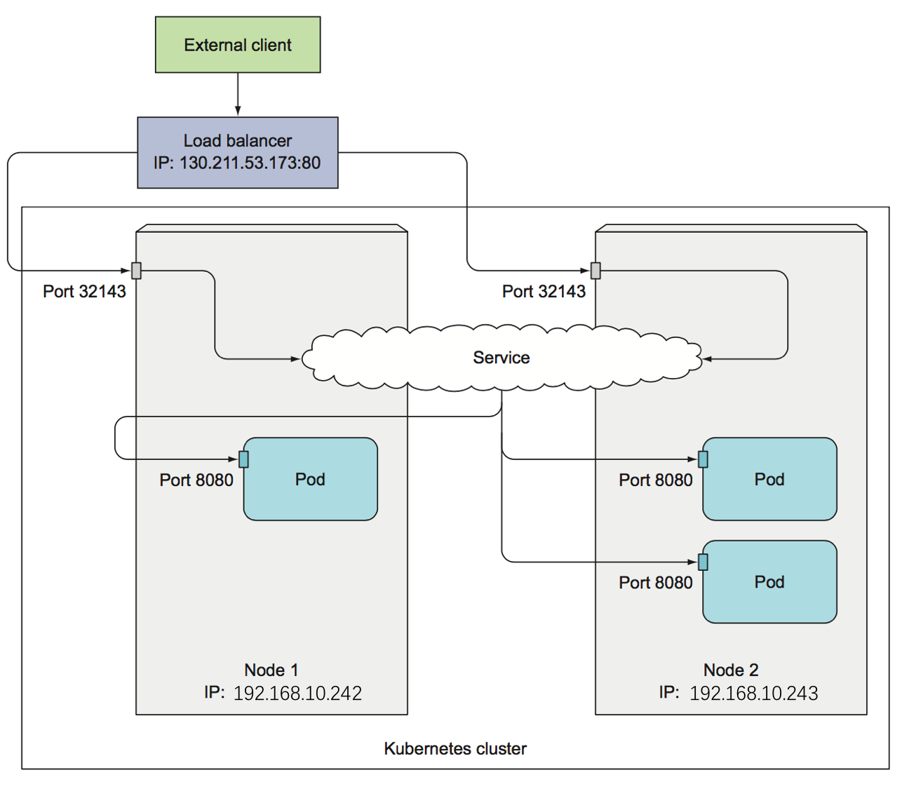
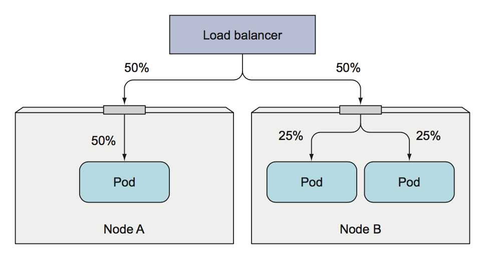
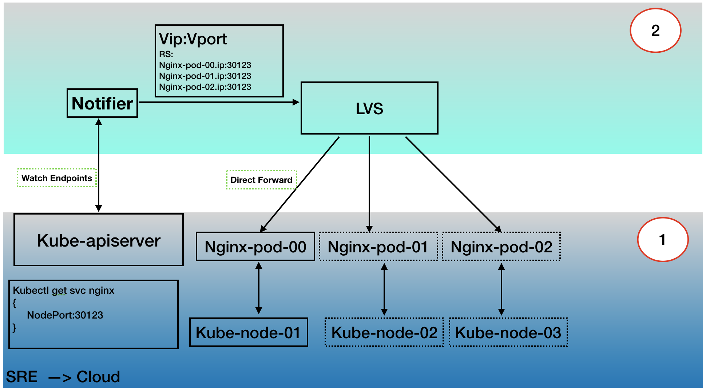
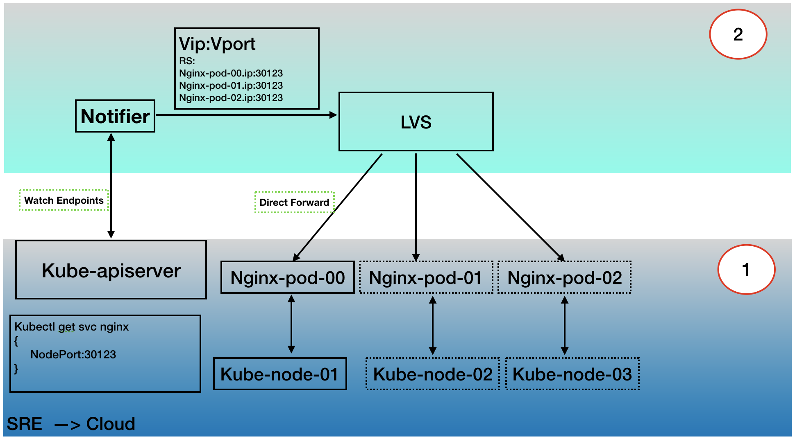

service type
到目前为止， 我们只讨论了集群内服务如何被pod使用，但是，生产环境中， 大多数服务还是要对外提供服务的，例如web服务器： 
将服务暴露给外部客户端，有如下几种方式，即service 的 type：
- ClusterIP：使用一个集群固定IP，这个是默认选项。其中port是service中clusterip对应的端口；targetport是clusterIP作为负载均衡，后端目标容器实例的端口。
- NodePort：在每个集群node节点开启一个nodeport端口，并将在该端口上接收到的流量重定向到基础服务。
- LoadBalancer：是Nodeport的一种扩展，使服务可以通过一个专用的负载均衡器来访问，这是由Kubernetes中正在运行的云基础设施提供的。负载均衡器将流量重定向到跨所有节点的节点端口(nodeport),客户端通过负载均衡器的IP连接到服务。
NodePort
通过创建Nodeport服务，可以让Kubernetes 在其所有节点上保留一个端口(所有节点上都使用相同的端口号).并将传入的链接转发给后端pod； 使用Nodeport服务，还可以通过服务的内部集群IP访问Nodeport服务。
创建NodePort服务
将类型设置为NodePort，并指定该服务应该绑定到的所有集群节点的端口，(指定不是强制性的，也可以让系统随机分配)
# kubia-svc-nodeport.yaml
apiVersion: v1
kind: Service
metadata:
name: kubia-nodeport
spec:
type: NodePort
ports:
- port: 80
targetPort: 8080
nodePort: 30123
selector:
app: kubia
解释：
type: NodePort, 说明为NodePort服务类型
ports.port: 80, 说明服务的端口号为80
ports.targetPort: 8080，说明后端容器的端口号为8080
ports.nodePort: 30123, 说明是可以通过节点的30123端口访问该服务
查看 service:
$ kubectl get svc kubia-nodeport
NAME CLUSTER-IP EXTERNAL-IP PORT(S) AGE
kubia-nodeport 10.111.254.223 <nodes> 80:30123/TCP 2m
关注一下 EXTERNAL-IP 列， 显示的nodes， 表明服务可通过在任意集群节点的IP地址访问。PORT(S)列显示集群IP(80)的内部端口和节点端口(30123),也就是说， 可以通过如下方式访问该服务：
10.111.254.223:80
<node1's ip>:30123
<node2's ip>:30123
<nodeN's ip>:30123
外部流量是如何接入的？
当请求到达任何一个端口的后， 都会被重定向到一个随机选择的pod，该pod是否位于接收到请求的节点上是不确定的。也就是说，在node1的30123端口上收到的连接请求，可以被重定向到node2节点上的pod。如下图： 
LoadBalancer
在云提供商上运行的Kubernetes集群时，云提供商通常支持从云基础架构自动提供负载平衡器。而我们需要做的就是设置服务的类型为LoadBalancer，负载均衡器拥有自己独一无二的可公开访问的IP地址， 并将所有连接重定向到服务，并通过负载均衡器的IP访问服务。
如果Kubernetes运行在一个不支持 LoadBalancer 服务的环境中运行时， 该服务则表现的像一个NodePort服务。 这是因为 LoadBalancer服务是 NodePort服务的扩展。
创建 LoadBalancer 服务
#kubia-svc-loadbalancer.yaml
apiVersion: v1
kind: Service
metadata:
name: kubia-loadbalancer
spec:
type: LoadBalancer
ports:
- port: 80
targetPort: 8080
selector:
app: kubia
通过负载均衡器连接服务
服务创建之后， 云基础架构会等一段时间才能创建负载均衡器并将IP地址写入服务对象。一旦这样实施了，IP地址将被列为服务的外部IP地址：
$ kubectl get svc kubia-loadbalancer
NAME CLUSTER-IP EXTERNAL-IP PORT(S) AGE
kubia-loadbalancer 10.111.241.153 130.211.53.173 80:32143/TCP 1m
如果成功了， EXTERNAL-IP 就是负载均衡器的IP，可以通过如下方式访问到服务了：
$ curl http://130.211.53.173
You\'ve hit kubia-xueq1
loadbalancer服务流量是如何接入的
和NodePort服务稍有不同，比如： 
外部连接的特性
网络连接跳数
当外部客户端通过NodePort连接到服务时， 将随机选择pod，并不一定选择在接收请求的节点上的pod作为后端server，这就会带来额外的网络跳数才能转发到pod，但这种行为并不是用户希望的。可以通过配置仅将外部通信重定向到接收请求的节点上运行的pod，如何设置？
apiVersion: v1
kind: Service
spec:
externalTrafficPolicy: Local
....
如果服务包含此设置， 并且通过服务的节点端口打开外部连接后，则kube-proxy将选择本地运行的pod。
缺点
- 如果本地pod不存在， 则连接将被挂起，不会转发到其它节点的pod，因此，需要确保负载均衡器将转发给至少具有一个pod的节点；
- 流量不均匀，比如有三个pod，两个节点，其中有一个节点上有一个pod，另一个节点上有两个pod。比如： 
客户端IP的变化 当通过kube-proxy转发连接请求到pod后，如果选择的POD不在本地的node上面，则需要进行一次DNAT，将请求的目标地址设置成所选择的POD的IP，之后会进行路由选择，确定这是一个egress的数据包。在路由之后，还有一个POST ROUTING的规则如下：
-A KUBE-POSTROUTING -m comment --comment "kubernetes service traffic requiring SNAT" -m mark --mark 0x4000/0x4000 -j MASQUERADE
由于数据包执行了源网络地址转换(MASQUERADE 基于接口动态IP的SNAT处理), 因此数据包的源IP将发生更改,POD里面的应用程序看到的就是node的IP或者CNI互联设备的IP；如何保持不变呢？ 也是上面网络连接跳数里讲到的externalTrafficPolicy配置。
企业实践
V1: 通过LVS 转发到 kube-proxy,再转发到pod；
 v2: 通过LVS直接转发到pod；

v2: 通过LVS直接转发到pod；
